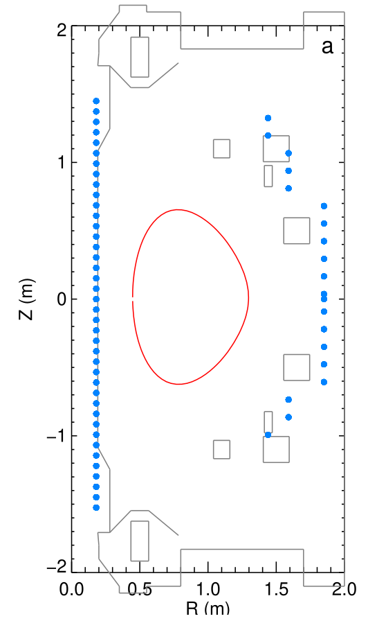
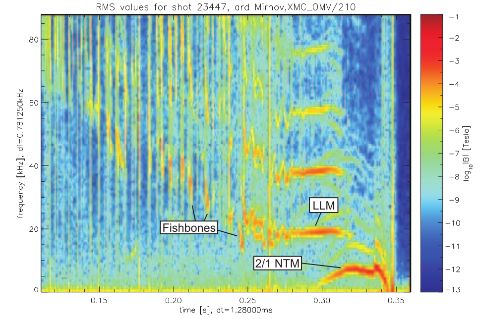

Mirnov coils#
A Mirnov coil is a simple multi-turn loop of wire that measures the rate of change of magnetic field in the direction perpendicular to the plane of the loop via Faraday-Lenz law in electromagnetism. A signal can be registered either because the field strength is varying in time or there is a spatially varying magnetic field moving relative to the coil.
The location of mirnov coils are shown in the following figure:

Use of Mirnov coils in MHD modes#
A variety of plasma instabilities, such as NTMs, ideal MHD modes and chirping fast particle modes, can be identified by their characteristic time traces on a Fourier transform spectrogram of a Mirnov coil signal.
import zarr
import zarr.storage
import fsspec
import numpy as np
import xarray as xr
import matplotlib.pyplot as plt
from matplotlib.colors import LogNorm
from scipy.signal import stft
shot_id = 23447
endpoint="https://s3.echo.stfc.ac.uk"
fs = fsspec.filesystem(
protocol='simplecache',
target_protocol="s3",
target_options=dict(anon=True, endpoint_url=endpoint)
)
url = f"s3://mast/level2/shots/{shot_id}.zarr"
store = zarr.storage.FSStore(fs=fs, url=url)
root = zarr.open_group(store, mode='r')
# List all variables/groups at the root level
print("Available variables/groups at root:")
for key in root:
print(key)
Available variables/groups at root:
charge_exchange
equilibrium
gas_injection
magnetics
pf_active
pulse_schedule
soft_x_rays
spectrometer_visible
summary
thomson_scattering
root['equilibrium']
<zarr.hierarchy.Group '/equilibrium' read-only>
mirnov = xr.open_zarr(store, group="magnetics")
mirnov
<xarray.Dataset> Size: 32MB
Dimensions: (b_field_pol_probe_cc_channel: 5,
time_mirnov: 261200,
b_field_pol_probe_ccbv_channel: 40,
time: 2612,
b_field_pol_probe_obr_channel: 18,
b_field_pol_probe_obv_channel: 18,
b_field_pol_probe_omv_channel: 3,
b_field_tor_probe_cc_channel: 3,
b_field_tor_probe_saddle_field_channel: 12,
time_saddle: 26120,
b_field_tor_probe_saddle_voltage_channel: 12,
flux_loop_channel: 15)
Coordinates:
* b_field_pol_probe_cc_channel (b_field_pol_probe_cc_channel) <U13 260B ...
* b_field_pol_probe_ccbv_channel (b_field_pol_probe_ccbv_channel) <U10 2kB ...
* b_field_pol_probe_obr_channel (b_field_pol_probe_obr_channel) <U9 648B ...
* b_field_pol_probe_obv_channel (b_field_pol_probe_obv_channel) <U9 648B ...
* b_field_pol_probe_omv_channel (b_field_pol_probe_omv_channel) <U11 132B ...
* b_field_tor_probe_cc_channel (b_field_tor_probe_cc_channel) <U13 156B ...
* b_field_tor_probe_saddle_field_channel (b_field_tor_probe_saddle_field_channel) <U11 528B ...
* b_field_tor_probe_saddle_voltage_channel (b_field_tor_probe_saddle_voltage_channel) <U15 720B ...
* flux_loop_channel (flux_loop_channel) <U12 720B '...
* time (time) float64 21kB -0.099 ... ...
* time_mirnov (time_mirnov) float64 2MB -0.09...
* time_saddle (time_saddle) float64 209kB -0....
Data variables:
b_field_pol_probe_cc_field (b_field_pol_probe_cc_channel, time_mirnov) float64 10MB ...
b_field_pol_probe_ccbv_field (b_field_pol_probe_ccbv_channel, time) float64 836kB ...
b_field_pol_probe_obr_field (b_field_pol_probe_obr_channel, time) float64 376kB ...
b_field_pol_probe_obv_field (b_field_pol_probe_obv_channel, time) float64 376kB ...
b_field_pol_probe_omv_voltage (b_field_pol_probe_omv_channel, time_mirnov) float64 6MB ...
b_field_tor_probe_cc_field (b_field_tor_probe_cc_channel, time_mirnov) float64 6MB ...
b_field_tor_probe_saddle_field (b_field_tor_probe_saddle_field_channel, time_saddle) float64 3MB ...
b_field_tor_probe_saddle_voltage (b_field_tor_probe_saddle_voltage_channel, time_saddle) float64 3MB ...
flux_loop_flux (flux_loop_channel, time) float64 313kB ...
ip (time) float64 21kB ...
Attributes:
description:
imas: magnetics
label: Plasma Current
name: magnetics
uda_name: AMC_PLASMA CURRENT
units: AEach data variable denote the magnetic field signal from a Mirnov coil at different locations.
Visualising omaha_l5c#
ds = mirnov['b_field_pol_probe_omv_voltage'].isel(b_field_pol_probe_omv_channel=1)
ds.plot()
[<matplotlib.lines.Line2D at 0x771c57f364b0>]
Fourier transform spectrogram of magnetic fluctuations (measured in Tesla) from a Mirnov coil#
nperseg = 2000 # Number of points per segment
nfft = 2000 # Number of FFT points
# Compute the Short-Time Fourier Transform (STFT)
sample_rate = 1/(ds.time_mirnov[1] - ds.time_mirnov[0])
f, t, Zxx = stft(ds, fs=int(sample_rate), nperseg=nperseg, nfft=nfft)
fig, ax = plt.subplots(figsize=(15, 5))
cax = ax.pcolormesh(t, f/1000, np.abs(Zxx), shading='nearest', cmap='jet', norm=LogNorm(vmin=1e-5))
ax.set_ylim(0, 50)
ax.set_title(f'Shot {shot_id}, magnetic field fluctuation amplitude')
ax.set_ylabel('Frequency [Hz]')
ax.set_xlabel('Time [sec]')
ax.set_xlim(0.1, 0.46)
plt.colorbar(cax, ax=ax)
<matplotlib.colorbar.Colorbar at 0x771c2eb019d0>
A much better picture plotted in a Phd thesis is shown below:

This plot represents the frequency spectrum of magnetic fluctuations (measured in Tesla) recorded using diagnostics such as Mirnov coils during a plasma discharge in a tokamak (e.g., MAST or JET). The spectrogram is a collection of multiple FFTs (Fast Fourier Transforms) performed over successive short time intervals during the plasma shot. The axes are:
X-axis: Time (in seconds).
Y-axis: Frequency (in kHz).
Color: Logarithmic scale of magnetic field fluctuation amplitude (log₁₀|B|) in Tesla, where warmer colors (red/orange) indicate stronger signals and cooler colors (blue) indicate weaker signals.
where warmer colors (red/orange) indicate stronger signals and cooler colors (blue) indicate weaker signals.
Chirping (Fishbones): The frequency changes (“chirps”) over a short time scale.
2/1 NTM (Neoclassical Tearing Mode): Characterised as low-frequency (often below ~20 kHz) instability.
Constant Frequency (Long-Lived Modes - LLMs): Frequency stays constant over extended time durations.
These distinct patterns can be used to identify different types of plasma instabilities and to study their evolution over time.